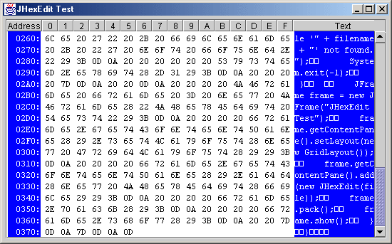
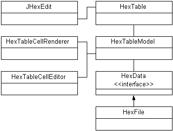

by Claude Duguay
ROUGH DRAFT
Necessity is the mother of invention and I have to admit to cheating. This month we'll take a look at a component that was inspired by the need to hack a game file. Not having a decent solution at hand, I simply decided to roll my own. The result is a file editing component that lets you change any byte in a file, represented as hexadecimal values. To make it easier to see text content, the bytes are also shown in character form on the right of the hexadecimal bytes.

Figure 1: JHexEdit at work. The left and right columns are not editable,
nor are the black values at the end of the file, but you can change any
hex value by double-clicking on it.
Hex editors are useful but dangerous, so I want to put forward a standard warning. If you use this to view a file, any and all changes you make are applied immediately to the file. There is no way to reverse your changes unless you remember the original byte values and manually restore them. If you use a component like this in your program, be sure to make it clear that changing the wrong byte in a file can destroy it's integrity, or potentially much worse if it's a program or an operating system file. That being said, let's take a look at the basic design.

Figure 2: JHexEdit classes. We use a custom cell renderer and editor
and a model that wraps itself around a HexData object, which may
be a file or other binary data source.
Our primary objective is to develop a component that supports hexadecimal byte editing. The component needs to be easy to use and informative, as well as familiar. As always, the more flexible the design, the more likely this code will be reusable. There aren't a lot of circumstances under which a hex editor is likely to be used, but we can imagine that it may be applied to any block of bytes that can be read and written to, so we'll avoid tight coupling with a file by introducing a HexData interface, which looks like this:
public interface HexData
{
public int getRowCount();
public int getColumnCount();
public int getLastRowSize();
public byte getByte(
int row, int col);
public void setByte(
int row, int col, byte value);
public byte[] getRow(int row);
}
|
Our implementation will use a fixed column count of 16. For files, the row count will be the file size divided by the column count. Since the file size may not be an exact multiple of our column count, we expose a method to get the size of the last row. The getByte and setByte methods are used for editing individual bytes. The getRow method is there so that we can get a full row to display it in text form.
By using an interface like this, we could easily implement an editor that works on an arbitrary chunk of memory, and in Java 1.4 on a memory mapped file. This implementation is based on a RandomAccessFile extension called HexFile. The HexFile class implements each of the methods in HexData and provides two constructors that expects a File object or file name String. In each case, the RandomAccessFile is opened in read-write mode for editing.
Because JHexEdit is based on a JTable, we'll provide a custom renderer and editor so that the view can be further customized. The HexTableCellRenderer class extends the DefaultTableCellRenderer, inheriting most of it's capabilities. I've added a little code to branch to different colors and text alignment, depending on the column or the selection and focus state. The HexTableCellEditor classes extends DefaultCellEditor and changes only the color and text alignment for the editor.
Let's take a look at the HexTableModel in Listing 1. It implements the TableModel interface and uses a HexData object to handle the actual data. We keep a static list of HEX characters for easy formatting. Our model, renderer and editor expect string values for everything, so we'll translate on the way in and out. To do this, we implement a byteToHex and an intToHex method, both of which are declared protected. The rest of the methods implement the TableModel interface.
We always assume a String class is in use in the getColumnClass method. The getColumnCount and getRowCount methods use the names array size and HexData row counts, respectively. The isCellEditable method returns true if we are looking at a hex byte. The address column and text display are excluded, as are any cells that go past the end of the data in the last row.
The getValueAt method returns a String representing the address for the first column, a String for the last (calling the HexData getRow method to get all the bytes for this row) and a hex representation for any valid byte position. The setValueAt method should only be setting editable values, and so all entries are redirected to the HexData setByte method, after being parsed as an integer.
You'll notice that the setValueAt method fires two change events. This is because we want the cell that was changed and the string representation in the last column to be updated in the view at the same time. The fireModelChangeEvent method sends TableModelEvent to every registered TableModelListener interface. The JTable view is always registered as a listener and can therefore keep the visible cells in sync with the data.
The last two methods implement the listener registration portion of the TableModel interface, allowing listeners to be added and removed. We use an ArrayList to store the listeners and the fireModelChangeEvent method handles the actual dispatching of listener messages. As always, we clone the list before calling it to avoid any possible contention issues.
Listing 2 shows the code for HexTable. Because we are using a custom model, renderer and editor, we first set those values in the constructor. The constructor expects a HexTableModel argument. We override the setModel method to rejects attempt to set a model that is not an instance of HexTableModel just to be safe.
In order to control the layout more effectively, we walk through each column and set the width values explicitly. By default, columns are 22 pixels wide (so that we have room for a two character hexadecimal byte representation), except if we are dealing with the first or last column. The first column is the address in hexadecimal format and the last column is the text representation for the row. The rest of the setup work is trivial. We turn off the grid display and the row selection, then set a monospaced font and the inter-cell spacing to leave a little room between bytes.
The code for JHexEdit is minimal, since most of the work is done by HexTable and the HexTableModel. You can check it out in Listing 3. We provide two constructors. One that creates a HexFile object, which implements the HexData interface, and another that accepts a HexData object directly. The latter is the one you would use if you have a custom HexData object to edit. Normally, you'll be dealing with a file and can simply pass a Java File instance.
The rest of the more generic constructor creates a HexTableModel with the HexData object and then a new HexTable that uses the model. We also set the border to add 4 pixels all the way around a JScrollPane, which actually contains the table, in a GridLayout. Finally, we set the preferred size to be the preferred width of the table, plus the 8 border pixels, with a height of 400 pixels. You can change this by calling setPreferredSize explicitly if you prefer something else.
JHexEdit is a Swing implementation of a common application found in operating systems or utility software. It demonstrates the use of a TableModel to access and modify byte-level information and may be of use to you if you're building low-level editing applications. If you implement this kind of functionality, make sure your users are well aware of the dangers that come with the power and responsibility of using something like JHexEdit.